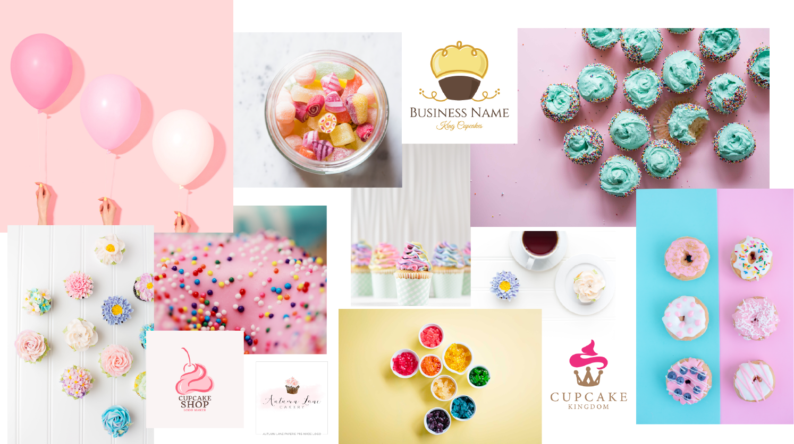

New York Cupcakes
Visual Branding
The Story
New York Cupcakes is a small, local cupcake shop that opened their first location in my hometown. My best friend and I used to go there every Thursday after class and our mission was to try all all the flavors they had. We loved the atmosphere inside - the walls are all pink and red, they have fairy lights and fun decorations, and countless posters about being a princess. They also only played disney songs, and it was such a warm, welcoming place to be.
Brief
In our visual communication class, our final project was to redesign a local store's mobile site, including a logo redesign, to emphasize the emotions and values behind the store. The values I wanted to convey were family-friendly, fun, and girly, while maintaining a modern and professional feel.
Their current website is useful but outdated. The design is more tacky than cute, their visual hierarchy is lacking, and their text alignment is off. I didn't think it accurately conveyed the lively, warm, girly feeling inside the store. Our assignment was to redesign 2 pages, so I chose the home page and the about page. The original home page is pictured below.
- Class
- HCDE 318: Visual Communication in HCDE
- Date
- 11-20-2016 through 12-7-18
The Existing Website
The current website isn't awful, but it could definitely be improved. The text is lacking hierarchy, and the bullet points aren't aligned properly. I also don't think the facebook sidebar does much for the website. The picture of the cake is pretty cool, but there could be a better way to display this information. On top of all these small things, it doesn't feel very fun or whimsical like the store itself is. It's a bit plain, and doesn't convey any particular emotions just from looking at it.
Visual Inspiration
This was my moodboard for designing the mobile website. I used pastel colors like light pinks, yellows, and blues to give it a feminine, playful feeling. I also liked logos that incorporated their name into the logo shape, and used that to create the form of a cupcake.
Typography
I used a fun, rounded serif font for the headers, and a thin san-serif for the body to create some contrast. I also wanted a whimsical, elegant script for the logo. Here are the ones I ended up using.


{kind=link}
Reflection
This project was a lot of fun for me. Not only did I learn the basics of design, like typography, colors, hierarchy, grouping, and etc., I also got a lot of practice using design software, like Illustrator, Indesign, and even Photoshop. I love how visual elements can convey different emotions depending on how they're designed - even the smallest changes can have the biggest impacts. This class has taught me that design is an important, powerful skill that I will continue to learn and practice for as long as I'm here.